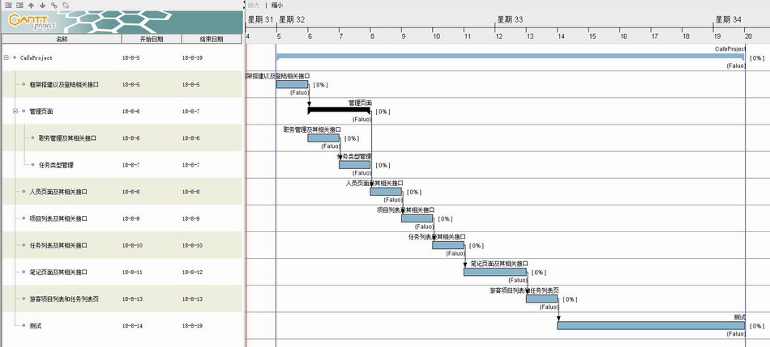
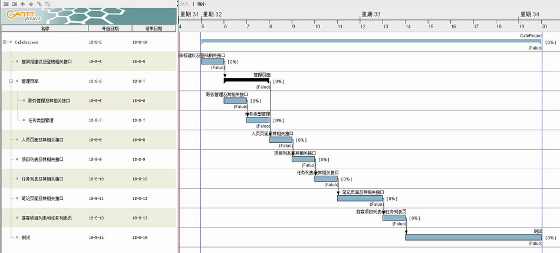

cafeProject-Day2-规划完成
按照昨博客中说的步骤，今天我画完了原型图，并且简单排了下工期。工期如下：

如果不出意外，我将按照这份工期表，每天“工作”3个小时左右的速度完成它。做过项目管理的同学肯定都知道，项目延期家常便饭。原因总是各种各样，我给我自己的项目也是有余度的。外一有哪一天有其它的事情，一行代码都没写呢。我给自己画的线是可以延期不能超过一周。这也是对自己的锻炼。明天，正式开始。
©Faluo 2018

按照昨博客中说的步骤，今天我画完了原型图，并且简单排了下工期。工期如下：

如果不出意外，我将按照这份工期表，每天“工作”3个小时左右的速度完成它。做过项目管理的同学肯定都知道，项目延期家常便饭。原因总是各种各样，我给我自己的项目也是有余度的。外一有哪一天有其它的事情，一行代码都没写呢。我给自己画的线是可以延期不能超过一周。这也是对自己的锻炼。明天，正式开始。